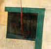

![[Art on the Net]](/images/artnet_button.gif)
![[Gallery]](/images/gallery_button.gif)
![[Studios]](/images/studios_button.gif)
![[What's New]](/images/whats_new_button.gif)
Sari Khoury wrote to me about influences in his work:

"Having learned to write in Arabic meant the cursive line was important to me, and hence I always include the cursive whiplash line. My sense of space is also based on the importance of negative space to Arabic writing where emptiness equalizes written space. Also the sense of rhythm that is inherent to Arabic writing. The physical nature of the Arab World has its influences in subtle ways- such as an abundance of blue because blue skies abounds. Mannerisms and customs such as associated with native Jerusalemites which were characterized by gentleness and civility somehow manifest themselves in methods of expression. I had also spent time observing religious icons. While for the most part crude, naive, and lacking in drawing skills, they seemed to exude with emotional intensity hidden under the flat golds, blues and reds.
My work evolved in many directions over the years. The teacher in me is always dictating something new for me to strive for. I have tried many styles and recently I settled on a freer style working in acrylics and pastels on paper. The activity of drawing is important to me even as I paint. So there is always the presence of the line either used independently or as it describes the edge of a shape. I have learned that it could be spontaneous or restrained or awkward or jagged or fluent thus expressing my emotional state of mind much as a jazz musician chooses to fluctuate with the mood of the moment. Color meant more to me earlier, but recently I have given it less importance in avoidance of what can become decorative. Paint application is also becoming important to me. Not as a fixed style, but in exploring various mark-making and layering effects. I have for most of my career avoided falling a victim to a single process. In this respect, I am an avid follower of the painter Paul Klee, and admire very much his innovative spirit. I also had a great admiration for Kandinsky, Ben Nicholson, and Arshile Gorky. As for the Abstract Expressionists, I still subscribe to the gutsy fatalistic nature of that movement, but recently find myself bored with the likes of Motherwell who was hero to all the art students when I was at Cranbrook in the mid sixties. Now, I realize one can only go so far with iconoclasm, and one can hence paint oneself into a corner. The need to paint imagery is taking even a greater hold of the artist nowadays.
Artists like Clemente, Cuchi, Chia, and Guston all have done wonderful things with the figure, and it would be tempting to follow their lead, but they are the exception to a lot of bad figurative art being done today. In my work, I choose to imply the figure but not dwell on it. And I can never subscribe to using the figure in a literal or a literary manner.
In this day and age, after so much exposure to a variety of art styles and after witnessing a breakdown in artistic and cultural barriers, the playing field has become more open for us as artists. Whether it is technology as in computer art, or conceptual art, or through retroactive discoveries, there is a wealth of possibilities within the reach of the artist, but they must be characterized with freshness and integrity, and that is the hardest thing to do. That realization comes from the academic world that I am a part of. This has never been a worse time for imitative art where in our perception and understanding of our world we have become, in Plato's words, thrice (or many more times) removed from reality."
Copyright, Samia A. Halaby, 1999, All rights reserved. To request permission to reproduce any part of these pages send email to samia@interport.net
Select from the following menu representing the entire studio: